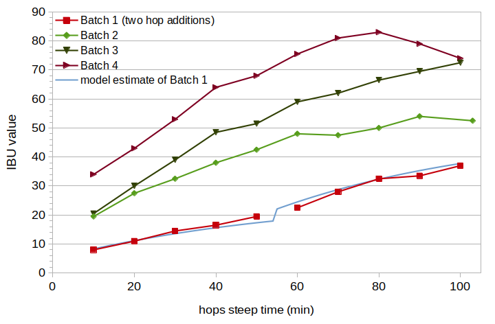
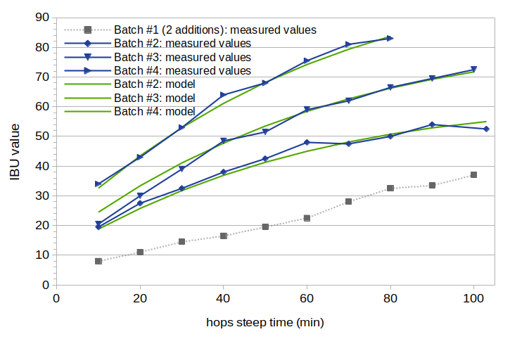
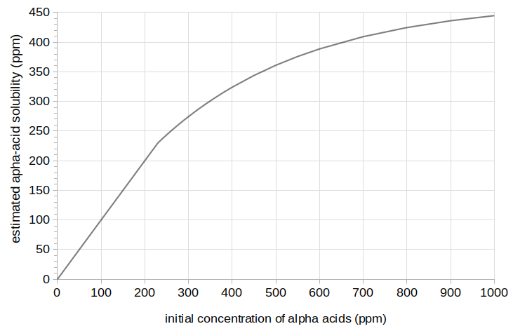

Figure 1. Estimated solubility of alpha acids at room temperature (from Malowicki, p. 53; image reproduced under the fair use doctrine) and at boiling (from Four Experiments on Alpha Acid Utilization and IBUs).
Figure 1. Estimated solubility of alpha acids at room temperature (from Malowicki, p. 53; image reproduced under the fair use doctrine) and at boiling (from Four Experiments on Alpha Acid Utilization and IBUs).
Abstract
It is well known that doubling the amount of hops in the boil can yield less than double the IBUs in the finished beer. When modeling IBUs, therefore, a hopping-rate correction factor is needed, with utilization decreasing as the concentration of hops increases. This post describes a model of alpha-acid solubility at boiling, based on the work of Mark Malowicki and experimental data. This solubility model can be used for hopping-rate correction in IBU prediction. This model is a refinement of the model described in Four Experiments on Alpha-Acid Utilization and IBUs. In this revised model, the alpha-acid solubility at boiling and typical wort pH is not a fixed value, but begins at 240 ppm and increases gradually to 490 ppm. At concentrations below 240 ppm, all of the alpha acids dissolve into the wort. At concentrations greater than 240 ppm, the solubility limit can be modeled with the equation 490 × (1 − e−0.00280×[AA]0) where [AA]0 is the concentration of alpha acids when added to the wort. Any alpha acids that are above this limit are quickly degraded and do not contribute to the isomerized alpha acids (or oxidized alpha acids) in the finished beer. This model demonstrates a good fit to available IBU data at a variety of hopping rates and boil times.
1. Introduction
1.1 Hopping Rates and Utilization
The relative amount of hops in the wort affects utilization. As Lewis and Young say, “a high hopping rate reduces extraction efficiency” [Lewis and Young, p. 267]. Daniels phrases this as “simply adding more and more hops does not produce a linear increase in the amount of bitterness produced” [Daniels, p. 85]. Fix also notes that the utilization rate is affected by hop concentration [Fix, p. 47]. Hough et al. say that “hops are utilized more efficiently at low rates” [Hough et al., p. 489]. (Utilization is the ratio of isomerized alpha acids present in the finished beer divided by the total alpha acids added.)
Garetz provides a quantitative model of the relationship between amount of hops and utilization. He proposes a hopping-rate correction factor (also described by Hall and Daniels) that depends on volume and “desired IBU” to determine the weight of hops needed [Garetz (b), p. 137; Hall, p. 63; Daniels, p. 86]. If we focus on full boils (instead of boiling a higher-gravity wort and then adding water), we can write the Garetz correction factor as
HF(IBU) = (IBU/260) + 1
where HF is the hopping-rate correction factor that depends on the (desired) IBU value, IBU. If the IBU value is to be estimated from the weight of hops, Hall provides a method to compute this correction factor in two steps rather than through the iterative process suggested by Garetz [Hall, p. 63]. I've previously found that this correction factor can overestimate predicted IBU values at high hopping rates.
1.2 Hopping Rates, Utilization, and Alpha-Acid Solubility
Previous work has indicated a relationship between the solubility of alpha acids and the reduced utilization found at high hopping rates. While alpha acids have a solubility limit between 70 and 90 ppm at room temperature and pH 5.2 [Malowicki, p. 54; Spetsig, p. 1423], Spetsig has estimated the solubility at boiling and pH 5.2 to be about 300 ppm [Spetsig, p. 1423]. (Malowicki notes a solubility limit of 200 ppm at boiling and pH 5.0 based on Spetsig's graph [Malowicki, p. 34], but this seems to be a typo, with actual values of 250 ppm at pH 5.0 and 300 ppm at pH 5.2.) This value of 300 ppm is based on extrapolation from conditions at 77°F (25°C) and 104°F (40°C), and should be considered an approximation [Spetsig, p. 1424]. Maule has noted that "when humulone was used at rates greater than 200 [ppm] the amount appearing as humulone and iso-humulone on break increased at the expense of the amounts remaining in the wort" [Maule, p. 289]. (Humulone is the most prevalent of the alpha acids, and the "chemistry of the other iso-alpha acids is practically identical to that of the isohumulones" [Verzele and De Keukeleire, p. 88], so the terms "humulone" and "iso-humulone" are often considered generally equivalent to the terms "alpha acid" and "isomerized alpha acid," respectively (to the chagrin of Verzele and De Keukeleire [p. 89]).) Maule then notes that what is not actually adsorbed to the break "represents the difference between the amount of resin present and its solubility in wort under the conditions employed" [Maule, p. 289]. This suggests an alpha-acid solubility limit closer to 200 ppm at boiling. (The solubility limit of the isomerized alpha acids is much higher, at 900 ppm in wort [Rudin, p. 18], and is not considered further in this post.) Hough et al. remark that "as may be anticipated from the solubility of humulone, hops are utilized more efficiently at low rates than at high ones. Indeed, it was concluded that the solubility of humulone was the limiting factor in its utilization" [Hough et al., p. 489]. These statements present a link between alpha-acid solubility and reduced utilization at high hopping rates, with an alpha-acid solubility limit between roughly 200 and 300 ppm.
In a previous blog post, Four Experiments on Alpha-Acid Utilization and IBUs, I suggested a model for hopping-rate correction based on alpha-acid solubility. In this model, the concentration of isomerized alpha acids (IAA) that ends up in the wort is limited by the solubility of alpha acids at boiling, but the bitter substances other than IAA that contribute to measured IBU values (nonIAA) increase linearly with the amount of hops added. These other bitter substances include oxidized alpha acids, hop polyphenols, malt polyphenols, and oxidized beta acids. I estimated the alpha-acid solubility limit in boiling wort at 270 ppm, which is in between the estimates from the literature of 200 to 300 ppm. In this model, the alpha acids only go into solution at concentrations of 270 ppm or less (at boiling and typical wort pH). Above this limit, the alpha acids are quickly degraded (or permanently removed from solution) and do not yield IAA in the finished beer. This model yielded a good fit to the available data, but it is an over-simplification in that oxidized alpha acids produced during the boil should be limited to the same extent that isomerization is limited. (Oxidized alpha acids produced during the boil may be the second-largest contributor to IBUs, after isomerized alpha acids.) The current blog post describes possible revisions to this model and more experiments to evaluate this model at different boil times.
1.3 Isomerization of Undissolved Alpha Acids
Alpha acids generally isomerize according to first-order reactions when dissolved in boiling wort, as described below [Malowicki, p. 24]. But what happens when the concentration of alpha acids is greater than the alpha-acid solubility limit? The dissolved alpha acids presumably undergo isomerization in the usual way, but the fate of those that are not (yet) dissolved is unclear. If the previous assumption that these alpha acids are quickly degraded into some other form is not correct, then the alpha acids may still undergo isomerization, presumably still as a first-order reaction but with an unknown rate constant.
Heat is the only requirement for alpha-acid isomerization; in other words, the presence of wort is not required (although it may be a catalyst). Isomerization can happen not only in the presence of boiling wort or alkaine media [Verzele and De Keukeleire, pp. 102-106], but also by exposure to light (photo-isomerization) [Verzele and De Keukeleire, pp. 106-109], or at high heat with the solid metal salts of humulone [Verzele and De Keukeleire, pp. 109-111]. In thermal isomerization, "humulone resists heating up to 100°C ... Above 180°C the thermal transformations and degradations of humulone occur very rapidly" [Verzele and De Keukeleire, p. 109], which implies that the alpha acids might be fairly stable at boiling in the absence of water or oxygen. On the other hand, "heat may also cause other reactions of the sensitive hop bitter acids and high temperatures must therefore be avoided" in the preparation of hop extracts [Verzele and De Keukeleire, p. 13], indicating that high temperatures might degrade the alpha acids through reactions not involving isomerization. It's also known that isomerization can be catalyzed by "calcium or magnesium ions, either in methanol solution or the solid state" [Hough et al., p. 493; Kappler et al., p. 332]. What are the chemical properties of the resin containing the undissolved alpha acids, and how do these properties affect isomerization? Does a lack of oxygen severely reduce the rate of isomerization? (Oxidation is "one of the first things to happen in the complex chemistry of humulone isomerization" [Dierckens and Verzele, p. 454]; a lack of oxygen might therefore slow down the rate of isomerization.) Does the presence of some catalyst in the resin increase the rate of isomerization? Do other reactions in the presence of heat cause degradation of the alpha acids? At what rate do the undissolved alpha acids dissolve into the wort as the dissolved alpha acids are converted into isomerized alpha acids?
Because the answers to these questions are not currently clear, we can construct a model of isomerization that tests various possibilities, and see which settings of the model produce the best fit to the available data. The resulting model and settings will not have been proven to be correct, but this will provide the most likely explanation (in a statistical sense) given the available data.
1.4 A Model of Isomerization for Dissolved Alpha Acids
I'll briefly introduce the model of alpha-acid isomerization developed by Mark Malowicki, which forms the foundation of the current hopping-rate correction model. This model of isomerization describes a general process for the conversion of alpha acids (AA) into (bitter) isomerized alpha acids (IAA), and the conversion of IAA into "uncharacterized degradation products" that aren't bitter (including humulinic acid, isobutyraldehyde, and iso-hexenoic acid) [Malowicki, p. 13, pp. 26-27; Hough et al., p. 480]. In this model, the concentration of IAA at time t can be determined from the initial concentration of alpha acids and two first-order reactions with temperature-dependent rate constants:
[IAA] = [AA]0 (k1(T)/(k2(T)-k1(T))) (e–k1(T)t-e–k2(T)t)
where [IAA] is the concentration of isomerized alpha acids in the wort at time t and temperature T, in parts per million (ppm), and [AA]0 is the initial concentration of alpha acids in the wort (also in ppm). (e is the mathematical constant 2.71828...) The variable k1(T) is the rate constant for the conversion of alpha acids into isomerized alpha acids and T is the temperature in degrees Kelvin,k1(T) = 7.9×1011 e-11858/T
and k2(T) is the rate constant for the conversion of isomerized alpha acids into other products,k2(T) = 4.1×1012 e-12994/T
At boiling (T=373.15°K), k1(T) is 0.0125 and k2(T) is 0.0031. Malowicki also provides a different form of the same equation [Malowicki, p. 27], in which the IAA concentration at time t is not computed from the initial level of alpha acids. Instead, the change in concentration of alpha acids at any time point is computed from the current concentration of alpha acids, and the change in IAA is computed from the current concentrations of alpha acids and IAA:d([AA])/dt = -k1(T)×[AA] d([IAA])/dt = k1(T)×[AA] - k2(T)×[IAA]
where d([AA])/dt is the change in alpha-acid concentration as a function of time (e.g. expressed in ppm per minute), and d([IAA])/dt is the change in IAA concentration as a function of time. If we start at time 0 with an alpha-acid concentration [AA]0 and an IAA concentration of zero, these changes in concentration can be integrated over a range of time values to arrive at a total concentration of AA and IAA at time t. We can approximate the integration on a computer using a very small time increment, tδ. While the numerical result is the same in these two forms of equations, one advantage of the second form is that multiple hop additions can be dealt with very easily when applying an alpha-acid solubility limit. Another advantage is that we can express the concentrations of undissolved alpha acids and IAA, and their transformation over time, in the same way.
2. Approach
2.1 Developing a General Model
The proposed model starts with Malowicki's formulas for the conversion of dissolved alpha acids. We can then predict IAA concentration in the wort from either (a) parallel formulas for the conversion of undissolved alpha acids into undissolved IAA, the production of undissolved degradation products, and the conversion of undissolved into dissolved components, and/or (b) a solubility limit that increases gradually as a function of initial alpha-acid concentration.
For the conversion of undissolved alpha acids into undissolved IAA, if we have alpha acids above the solubility limit at time t, then at the next time instant (t+tδ) some of the alpha acids in solution will have been converted into IAA. This lowers the dissolved alpha-acid concentration at t+tδ, allowing some of the alpha acids not yet in solution to dissolve into the wort at this time, potentially bringing the dissolved alpha-acid level back up to the solubility limit (as long as there are still undissolved alpha acids). This model then has multiple simultaneous processes: the conversion of dissolved alpha acids into (dissolved) IAA, the conversion of undissolved alpha acids into (undissolved) IAA, and the dissolving of the alpha acids and IAA into the wort. For each of these processes, there is an associated rate constant or two. The model is complex, but it can (a) replicate the more simple model in which alpha acids above a constant solubility limit are quickly degraded and (b) test a wide variety of other possible conversions.
The rate of dissolution of alpha acids into the wort can be modeled using the Noyes–Whitney equation, although at the solubility limit this rate can not be faster than the rate of conversion of dissolved alpha acids into IAA. Rather than model each of the five parameters this equation, we can recognize that all components except the surface area are constant at the solubility limit, and (assuming a spherical shape for the undissolved alpha acids) the surface area is proportional to the mass of alpha acids raised to the power of 2/3. Therefore, the rate of dissolution (in mg/second) is some (unknown) factor multiplied by the weight of undissolved alpha acids raised to the power of 2/3.
The solubility data provided by Malowicki at room temperature [Malowicki, p. 53] and estimated in a previous post (Four Experiments on Alpha-Acid Utilization and IBUs) show a gradual rise in solubility as the initial alpha-acid concentration increases above some minimum threshold (see Figure 1). We can therefore also model the solubility limit as a function of initial alpha-acid concentration, instead of using a constant value (e.g. 270 ppm at boiling). In this case, the solubility limit is not reached until some minimum concentration of alpha acids is exceeded, e.g. 200 ppm. As the initial concentration gets larger, the solubility limit also gets somewhat larger, so that an initial concentration of 800 ppm might have solubility of 400 ppm. This approach describes the shape of the observed data better than than a single value, although I don't have a good explanation for why the solubility would change like this. Because Malowicki observed a similar shape at room temperature, it is unlikely that this shape is a byproduct of the types of isomerization and dissolution discussed in the previous paragraph.
Figure 1. Estimated solubility of alpha acids at room temperature (from Malowicki, p. 53; image reproduced under the fair use doctrine) and at boiling (from Four Experiments on Alpha Acid Utilization and IBUs).
For quantifying a gradually-increasing solubility limit, we can specify a minimum limit at concentration [AA]limitMin and a maximum limit at [AA]limitMax. At concentrations below [AA]limitMin, all of the alpha acids dissolve in the boiling wort. Above this concentration, the solubility increases with concentration according to the formula
[AA]limit = [AA]limitMax × (1 − exp(slope × [AA]0))
where slope is a parameter that expresses how quickly solubility changes with increasing initial concentration, and exp() is the natural exponential function. The slope parameter is defined so that the result of this function at [AA]limitMin equals [AA]limitMin:slope = log(1 − ([AA]limitMin / [AA]limitMax)) / [AA]limitMin
where log() is a function to take the natural logarithm. This approach allows us to describe the solubility limit with two parameters: [AA]limitMin and [AA]limitMax. For example, we might set the minimum solubility to 200 ppm and the maximum solubility to 500 ppm. If [AA]0 is less than 200 ppm, then all alpha acids dissolve and no adjustment is needed. If [AA]0 is 200 ppm, then the solubility limit, [AA]limit, is 200 ppm. If [AA]0 is 400 ppm, then the solubility limit is 320 ppm, and if [AA]0 is 1000 ppm, then the limit is 461 ppm. The limit will never be greater than 500 ppm in this example.
2.2 Specific Models
Using the general model of isomerization, solubility, and dissolution described above, we can create ten specific models that reflect different assumptions. Model A has no solubility limit for alpha acids; we would expect this model to have the highest error when evaluated on measured data with high concentrations of [AA]0. Model B has a single (constant) solubility limit for alpha acids, and alpha acids that are not immediately dissolved are quickly turned into degradation products. Model C has a "soft" limit for alpha acids, with solubility a function of the initial alpha-acid concentration and described by two parameters, lower and upper solubility limits. Model D has no isomerization or other transformation of undissolved alpha acids (as hinted at by Verzele and De Keukeleire) with two parameters: a solubility limit and a rate of dissolution. Model E has no isomerization of undissolved alpha acids with three parameters: a lower solubility limit, an upper limit, and a rate of dissolution. Model F has no isomerization of undissolved alpha acids and a rate of dissolution that would be greater than the rate of conversion from alpha acids to IAA. This model has a single parameter, the solubility limit. Model G allows isomerization of the undissolved alpha acids and has a very high potential rate of dissolution. Because of the fast dissolution, the rate constant for transforming undissolved IAA into degradation products doesn't much matter. This model has two parameters, the solubility limit and the rate of isomerization of undissolved alpha acids. Model H has isomerization of undissolved alpha acids using three parameters: the solubility limit, the rate of isomerization of undissolved alpha acids, and the rate of dissolution. In this model, the undissolved IAA are assumed to be stable. Model I also has isomerization of undissolved alpha acids using three parameters: the solubility limit, the rate of isomerization of undissolved alpha acids, and the rate of dissolution. In this model, the undissolved IAA are assumed to degrade quickly. Finally, Model J has the most flexibility with four parameters: a solubility limit, a rate of conversion of undissolved alpha acids to IAA, a rate of conversion of undissolved IAA to degradation products, and a rate of dissolution.
2.3 Testing the Models
The approach used in this set of experiments was to create four conditions (i.e. four batches of beer) with different concentrations of hops, with one condition having an alpha-acid concentration well below the expected solubility limit. The wort from each condition was sampled at 10-minute intervals (from 10 to 100 minutes) during the boil, and each sample was fermented into beer. The resulting plots of IBUs as a function of boil time and hop concentration were then fit to each model of isomerization.
The best values of the model parameters can be estimated by finding those values that minimize the error between the model and measured IBU values. IBU levels are not the same as IAA levels, but we can use a technique that estimates the loss factors for IAA and auxiliary bittering compounds (particularly oxidized alpha acids), and use these loss factors with the model's production of IAA and auxiliary bittering compounds to estimate IBU values. The models that have a better description of the actual conversion of undissolved alpha acids to dissolved IAA should have a better fit to the measured IBU values and lower error.
3. Experimental Methods and Data
I brewed four batches of beer for this experiment. The four batches were designed to be identical in all respects, except for the initial concentration of alpha acids. (The first two batches were brewed on the same day, and the last two batches were brewed three weeks later.) The first batch had two hop additions, with 1.15 oz (32.6 g) of hops in 8.45 G (32 liters) added at steep time 0 (100 minutes before flameout) and another 1.15 oz (32.6 g) added at steep time 45 (55 minutes before flameout). For all batches, I took samples of wort at 10-minute intervals during the 100-minute boil, and quickly cooled them in an ice bath. In order to minimize any effects caused by removing samples of wort, I used as large a batch size as I dared in my 10 G (40 l) kettle. Targeting a boil gravity of 1.050, I used 8.5 lbs (3.85 kg) of Briess Pilsen DME in 7.867 G (29.78 l) of water, yielding about 8.6 G (32.55 l) of wort with a specific gravity of 1.047. I added hops after the wort had been boiling for 10 minutes, to avoid the foam associated with the start of the boil. The wort was boiled with the cover mostly on the kettle, except for taking samples and occasionally stirring the wort.
I used a 1 lb (0.45 kg) bag of Citra hops from YCH Hops (now Yakima Chief Hops) for this experiment, with hops from the same bag used in all four batches. (The hops were vacuum-sealed and stored in a freezer during the three weeks between brewing sessions.) This bag (lot number PR2-AAUCIT5065) was from the most recent harvest and had an alpha-acid rating of 13.3% and beta-acid rating of 3.9%. YCH claimed at the time that their hops are stored in nitrogen-flushed packaging to minimize oxidation over time. In a previous experiment using YCH Hops, I confirmed that the alpha-acid rating on my brew day (at about 10 months after harvest) was very similar to the package rating, and I expected the same in this experiment. Unfortunately, the measured IBU values from the first two batches of this experiment were dramatically lower than I was expecting. The most plausible explanation for this is that significant oxidation had occurred over the 7 or 8 months from harvest to brewing, greatly reducing the level of alpha acids (and also increasing the levels of oxidized alpha and beta acids). It's also unfortunate that, because I then needed all of the rest of this bag of hops for the remaining two experiments, I didn't have enough left over for testing the Hop Storage Index to confirm this hypothesis. Assuming that oxidation was the culprit, my best guesses are that the nitrogen flushing process didn't work with this bag, the bag didn't entirely seal, and/or the bag received a small puncture soon after packaging. The bag then presumably sat at room temperature and exposed to oxygen for 8 months. (Getting the measured IBU values from these experiments and realizing the implication was extremely disheartening, to put it mildly.)
During the boil, I contained the hops in a large nylon coarse-mesh bag in order to not include large hop particles in my samples. Previous experiments (from Brülosophy: 25 IBUs (bagged) vs. 27 IBUs (loose), and Four Experiments on Alpha-Acid Utilization and IBUs: 36 IBUs (bagged) vs. 37 IBUs (loose) and 34 IBUs (bagged) vs. 34 IBUs (loose)) have not shown a significant impact of a mesh bag on measured IBU values. In order to maximize contact of the hops with the wort, I added brass weights (a total of 3.2 oz (90.7 g)) to the mesh bag so that the hops would be quickly submerged and hydrated.
Each sample (about 14 oz (0.41 l)) was taken from the boil in an aluminum cup, which was placed in an ice bath and stirred to cool quickly. Once cooled to 75°F (24°C), the sample was transferred to a sanitized, sealed, and labeled quart (liter) container. I aerated each sample by vigorous shaking for 60 seconds, then added .01 oz (0.28 g) of Safale US-05 yeast (age 9 months) to target 750,000 viable cells per ml and degree Plato [Fix and Fix, p. 68]. (The process of taking a sample, cooling it, transferring it to a sanitized container, aerating, and pitching yeast took between 5 and 10 minutes.) After all samples were taken, the containers were cracked open to vent, and they fermented for a week. After one week of fermentation, I sent 4 oz (0.12 l) of each sample to Oregon BrewLab for IBU measurement. The final gravity of all samples was about 1.008 (minimum 1.0075; maximum 1.0085).
Table 1 shows the measured data for each batch, including initial wort volume, weight of hops added, volume and gravity at steep time 0, post-boil gravity (after 100 minutes), and pre- and post-boil pH. Tables 2 through 5 show the measured data for each sample, including estimated volume, estimated specific gravity, and measured IBUs. The volume at steep time 0 was estimated from the initial wort volume and the change in specific gravity from the initial wort to a sample taken at steep time 0. The specific gravity at each sample time was estimated by linear interpolation between the gravity at time 0 and the post-boil gravity. The volume at each sample time was estimated by interpolation using the time of the sample, volume at time 0, and the ratio of gravity at time 0 to gravity of the sample. Figure 2 shows the measured IBU values from the four batches at each 10-minute interval. Figure 2 also shows, for the first batch, the fit of the model described in Section 4.1 (blue line) using the estimated hops degradation factor of 0.75 and estimated harvest AA rating of 12.0%.
In general, from looking at Figure 2, the measured IBU values seem to fit well with the general concept of a first-order conversion from alpha acids to IAA and another first-order conversion from IAA to degradation products. However, the values at 90 and 100 minutes from the fourth batch (highest concentration of hops) show an unexpected decrease in IBUs. It's unclear why IBUs would decrease for this batch at these time points but not the other three batches, and I don't think that any parameter settings from Malowicki's model or the proposed model would explain this decrease (except for temperatures well in excess of boiling). I will assume for now that this decrease was a consequence of both the very long boil time and very high hopping rate. Because these two data points can not be easily modeled, and because they represent an extreme scenario not likely to be encountered by most brewers, I leave them out of further analysis and modeling.
| Batch 1 | Batch 2 | Batch 3 | Batch 4 | |
| initial wort volume | 8.45 G 31.99 l |
8.45 G 31.99 l |
8.57 G 32.44 l |
8.43 G 31.91 l |
| weight of hops added | 1.15 oz / 32.60 g at start (t = 0); another 1.15 oz / 32.60 g at t=55 |
2.923 oz 82.86 g |
4.25 oz 120.49 g |
6.25 oz 177.18 g |
| initial specific gravity | 1.0467 | 1.0475 | 1.0465 | 1.0468 |
| initial pH of wort | 5.80 | 5.78 | 5.76 | 5.76 |
| specific gravity at steep time 0 | 1.0482 | 1.0490 | 1.0475 | 1.0482 |
| wort volume at steep time 0 | 8.187 G 30.99 l |
8.187 G 30.99 l |
8.390 G 31.76 l |
8.185 G 30.98 l |
| post-boil specific gravity | 1.0507 | 1.0519 | 1.0521 | 1.0525 |
| post-boil pH | 5.55 | 5.47 | 5.43 | 5.42 |
| time: | 10 min | 20 min | 30 min | 40 min | 50 min | 60 min | 70 min | 80 min | 90 min | 100 min |
| vol. | 8.145 G 30.83 l |
8.103 G 30.67 l |
8.062 G 30.52 l |
8.021 G 30.36 l |
7.980 G 30.21 l |
7.940 G 30.06 l |
7.900 G 29.90 l |
7.861 G 29.76 l |
7.822 G 29.61 l |
7.783 G 29.46 l |
| SG | 1.0485 | 1.0487 | 1.0490 | 1.0492 | 1.0495 | 1.0497 | 1.0499 | 1.0502 | 1.0504 | 1.0507 |
| IBUs | 8.0 | 11.0 | 14.5 | 16.5 | 19.5 | 22.5 | 28.0 | 32.5 | 33.5 | 37.0 |
| time: | 10 min | 20 min | 30 min | 40 min | 50 min | 60 min | 70 min | 80 min | 90 min | 103 min |
| vol. | 8.143 G 30.82 l |
8.096 G 30.65 l |
8.048 G 30.46 l |
8.002 G 30.29 l |
7.956 G 30.12 l |
7.910 G 29.94 l |
7.865 G 29.77 l |
7.821 G 29.61 l |
7.777 G 29.44 l |
7.734 G 29.28 l |
| SG | 1.0493 | 1.0496 | 1.0499 | 1.0502 | 1.0505 | 1.0507 | 1.0510 | 1.0513 | 1.0516 | 1.0519 |
| IBUs | 19.5 | 27.5 | 32.5 | 38.0 | 42.5 | 48.0 | 47.5 | 50.0 | 54.0 | 52.5 |
| time: | 10 min | 20 min | 30 min | 40 min | 50 min | 60 min | 70 min | 80 min | 90 min | 100 min |
| vol. | 8.309 G 31.45 l |
8.230 G 31.15 l |
8.153 G 30.86 l |
8.077 G 30.57 l |
8.002 G 30.29 l |
7.929 G 30.01 l |
7.857 G 29.74 l |
7.786 G 29.47 l |
7.717 G 29.21 l |
7.649 G 28.95 l |
| SG | 1.0480 | 1.0484 | 1.0489 | 1.0493 | 1.0498 | 1.0503 | 1.0507 | 1.0512 | 1.0516 | 1.0521 |
| IBUs | 20.5 | 30.0 | 39.0 | 48.5 | 51.5 | 59.0 | 62.0 | 66.5 | 69.5 | 72.5 |
| time: | 10 min | 20 min | 30 min | 40 min | 50 min | 60 min | 70 min | 80 min | 90 min | 100 min |
| vol. | 8.113 G 30.71 l |
8.042 G 30.44 l |
7.972 G 30.18 l |
7.903 G 29.92 l |
7.836 G 29.66 l |
7.769 G 29.41 l |
7.704 G 29.16 l |
7.640 G 28.92 l |
7.577 G 28.68 l |
7.515 G 28.45 l |
| SG | 1.0486 | 1.0491 | 1.0495 | 1.0499 | 1.0503 | 1.0508 | 1.0512 | 1.0516 | 1.0521 | 1.0525 |
| IBUs | 34.0 | 43.0 | 53.0 | 64.0 | 68.0 | 75.5 | 81.0 | 83.0 | 79.0 | 74.0 |
 Figure 2. Measured IBU values from the four batches, and the best estimate from the model for Batch 1 (light blue line). Batch 1 had two hop additions, at 0 and 55 minutes, and no line is plotted between the two measured samples where a discontinuity is expected.
4. Parameter Estimation and Results
4.1 Estimating the Alpha-Acid Rating of the Hops
The measured IBU values from this experiment were far too low to be consistent with the alpha-acid (AA) rating of 13.3% on the package of hops. In order to get a better estimate of the AA rating on brew day, I estimated the hop degradation factor at 0.75, using the Garetz model [Garetz (a)] and assuming 8 months of storage at room temperature, a loss factor of 25% for Citra hops, and with the hops sealed in barrier packaging but not free from oxygen (storage factor 0.75). Then I used the technique described in the blog post Estimating Isomerized Alpha Acids and nonIAA from Multiple IBU Measurements to estimate the levels of IAA and auxiliary bittering compounds in Batch 1 (with all alpha acids presumably dissolved), and adjusted the harvest AA rating to reflect a typical IAA loss factor of about 0.5. The resulting harvest AA rating was 12.0%, lower than the package rating of 13.3% by 10% but well within the possible 20% variation reported by Verzele and De Keukeleire [Verzele and De Keukeleire, p. 331].
While the estimated values of the hop degradation factor and harvest AA rating are plausible, an inability to have real confidence in these values means that the solubility-limit results in this blog post can not be presented with certainty. The results presented here are therefore my best estimate, but further experiments will be needed to gain confidence in (or revise) the results.
The measured IBU values, modeled IBU values (with degradation factor 0.75 and AA rating 12.0%), and differences are listed in Table 6. The modeled IBU values are shown in Figure 2 with a light-blue line. The root-mean-square (RMS) error over the 10 data points was 1.27.
| time: | 10 min | 20 min | 30 min | 40 min | 50 min | 60 min | 70 min | 80 min | 90 min | 100 min |
| meas. IBU | 8.0 | 11.0 | 14.5 | 16.5 | 19.5 | 22.5 | 28.0 | 32.5 | 33.5 | 37.0 |
| model IBU | 7.99 | 10.76 | 13.15 | 15.19 | 16.93 | 24.05 | 28.36 | 32.03 | 35.14 | 37.76 |
| diff. | -0.01 | -0.24 | -1.35 | -1.31 | -2.57 | 1.55 | 0.36 | -0.47 | 1.64 | 0.76 |
4.2 Estimating the Model Parameters
We have ten different models for the production of IAA from alpha acids, described in Section 2.3. We have a way to convert between IAA values generated by this model and IBU values, described in the blog post Estimating Isomerized Alpha Acids and nonIAA from Multiple IBU Measurements. This conversion is modified by the various ways discussed in Section 2 for expressing solubility, conversion of undissolved alpha acids into IAA, and dissolution of undissolved alpha acids. (One additional modification is that the same solubility limit applied to alpha acids for affecting isomerization is applied to alpha acids that oxidize during the boil.) For each model, we can take a guess at parameter values for the model, compute the IAA and nonIAA concentrations using these values, map from IAA and nonIAA concentrations to an IBU value, and take the difference between estimated and measured IBU values. We do this many, many times with different guesses for the parameter values and all measured IBU values from Batches 2, 3, and 4 to see which values minimize the root-mean-square (RMS) error. In order to base the parameter estimates on a greater variety of initial alpha-acid concentrations, I also used 10 data points from Four Experiments on Alpha Acid Utilization and IBUs, experiments #3 and #4. Once we've determined the parameter values that yield the lowest error for a model, we can compare the ten models in terms of how well they fit the data.
For Model A (no solubility limit), the RMS error is 10.4. For Model B (a constant solubility limit and fast degradation of undissolved alpha acids), the RMS error is 3.8 with a limit of 380 ppm. For Model C (lower and upper solubility limits), the RMS error is 1.6 with a lower limit of 240 ppm and an upper limit of 490 ppm. For Model D (no isomerization of undissolved alpha acids), the RMS error is 3.2 with solubility 300 ppm and a rate constant for dissolution (at boiling) of 0.225. For Model E (no isomerization of undissolved alpha acids, with a "soft" solubility limit) the RMS error is 1.6 with a lower limit of 240 ppm, an upper limit of 480 ppm, and a dissolution rate constant of 0.015. For Model F (no isomerization of undissolved alpha acids and fast dissolution) the RMS error is 4.1 and the solubility limit is 280 ppm. For Model G (with isomerization of undissolved alpha acids and fast dissolution), the RMS error is 2.8 with solubility 200 ppm and a rate constant of 0.006 for conversion of alpha acids to IAA. For Model H (with isomerization of undissolved alpha acids, stable undissolved IAA, and a slower dissolution rate), the RMS error is 2.1 with solubility 240 ppm, a rate constant of 0.375 for conversion of alpha acids to IAA, and a dissolution rate constant of 0.112. For Model I (with isomerization of undissolved alpha acids, fast degradation of undissolved IAA, and a slower dissolution rate), the RMS error is 2.8 with solubility 300 ppm, a rate constant of 0.044 for conversion of alpha acids to IAA, and a dissolution rate constant of 0.510. For Model J (with parameters for isomerization and degradation of undissolved alpha acids and IAA), the RMS error is 1.9 with solubility 240 ppm, a rate constant of 0.076 for conversion of alpha acids to IAA, a rate constant of 0.028 for conversion of IAA to degradation products, and a dissolution rate constant of 0.187.
From these results, the best model is Model C, with error 1.6 and two parameters: a lower solubility limit of 240 ppm and an upper solubility limit of 490 ppm. (Model C is preferred over Model E because of its greater simplicity.) While Model C has been selected as the best model, it should be re-stated that this conclusion is tentative because of the difficulty in getting a reliable estimate of the alpha-acid rating and degradation factor of the hops that were used.
Results from this model for Batches 2, 3, and 4 are plotted in Figure 3 with solid green lines. The measured IBU values for Batches 2, 3, and 4 are plotted in this figure with solid blue lines, and Batch 1 is plotted with a dashed gray line. The solubility limit function for Model C is plotted in Figure 4.
 Figure 3. Estimated IBU values using solubility model C, compared with measured IBU values. The measured IBU values for Batches 2, 3, and 4 are plotted in blue. The model (estimated) values for these batches are plotted with solid green lines. The measured IBU values for Batch 1 are plotted in gray for reference.
 Figure 4. The "soft" solubility function estimated from this set of data, with a lower limit of 240 ppm and an upper limit of 490 ppm.
5. Conclusion
This blog post has discussed a general model for the isomerization of alpha acids at concentrations greater than the solubility limit. The model can be configured to evaluate different hypotheses, e.g. (a) the alpha acids above the solubility limit are quickly degraded, as I assumed in an earlier model, (b) the alpha acids not yet dissolved in wort are fairly stable, implied as a possibility by a statement by Verzele and De Keukeleire [Verzele and De Keukeleire, p. 109], (c) there are no expectations for the rate of conversion of alpha acids and IAA or the dissolving of alpha acids into wort, other than that they are first-order reactions, or (d) the solubility limit is a function of the initial concentration of alpha acids. The model with a gradually-increasing solubility limit as a function of [AA]0 had the best fit to the entire set of data. Because of difficulties in estimating [AA]0 in the data and the indirect methods used to estimate [IAA], the conclusion is not that this model is correct, but only that it is the most likely explanation for this set of data.
To obtain a more reliable estimate of the solubility of alpha acids at boiling, the best approach would be to use pure alpha acids and measure IAA levels directly, as in Mark Malowicki's thesis [Malowicki]. A second-best approach would be to re-do the analysis described in this blog post with hops that have a more reliable estimate of alpha-acid content and storage conditions.
In the "soft limit" solubility model, the estimated alpha-acid solubility limit starts at about 240 ppm and increases gradually, with an upper limit at 490 ppm. One complication is that, according to Spetsig's extrapolations, the solubility limit of alpha acids at the pH of the wort used in these experiments (about 5.75) should be about 1000 ppm. However, another experiment that looks at alpha-acid solubility at boiling and a lower pH indicates that the influence of pH at boiling is not as extreme as indicated by Spetsig's graph.
Acknowledgements
I am extremely grateful to (in alphabetical order) Nev Ash at Online Brewing Supplies, Dana Garves at Oregon Brewlab, and Hannah McMullen for their contributions to this post, including: feedback on the writing, help with concepts, measuring IBU values, and/or tracking down related published work. Any errors are, of course, the sole responsibility of the author.
References
Navigate to:
AlchemyOverlord home page